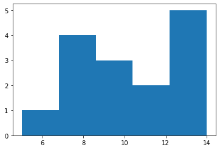
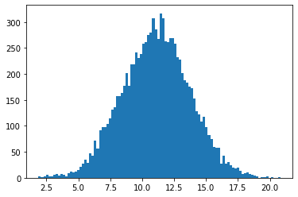
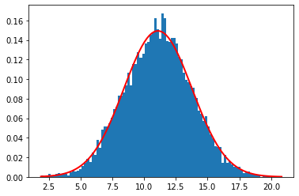

Lab 1: Introdução ao Jupyter notebook
Neste notebook veremos uma breve introdução ao ambiente Jupyter e a linguagem Python. Veremos também como utilizar alguns elementos básicos de interesse do nosso curso. Como, por exemplo, expressar números complexos, vetores e matrizes, além de escrever e usar funções matemáticas e produzir gráficos em Python.
Na próxima aula prática, veremos como usar ferramentas de computação algébrica, com expressões analíticas.
Notebook Basics
O Jupyter notebook permite reunir num mesmo documento um ambiente interativo com textos e fórmulas matemáticas, figuras e gráficos, código em Python (ou outras linguagens), código HTML e widgets interativos, tudo num só lugar, interagindo de forma integral. É ótimo tanto para testar e explorar ideias, como comunicá-las a outras pessoas.
Para ter informaçãos de como funciona o ambiente do notebook Jupyter, acesse os links:
- What is Jupyter Notebook
- Notebook basics
- Working with Markdown cells
- Typesetting Equations (with LaTeX)
Para facilitar, ainda mais e também permitir você explorar/modificar os códigos fontes, eu incluí uma cópia do diretórios de exemplos aqui, na sua área neste servidor. Basta procurar o diretório Jupyter_Tutorial/examples/Notebook no diretório principal, quando você faz o login neste servidor. Alternativamente, poderá acessar esse exemplos no GitHub.
Não deixe de acessar e explorar o link acima (além de acessar o código neste servidor, você pode baixar o notebook e explorar o código localmente, para entender seus elementos -- é uma ótima forma de aprender rapidamente!). Para acessar o Jupyter (Python) no seu computador (localmente), eu recomendo instalar a distribuição Anaconda.
A seguir nós iremos nos concentra em como usar esse ambiente para as atividades e tarefas desta disciplina.
Números e operações básicas
Python é uma linguagem interpretada, em contraste com linguagens compiladas, o que significa que, além de gerar programas (scripts) você também pode interagir diretamente com o interpretador e, por exemplo, fazer cálculos como numa calculadora.
3+4
7
3*7
21
7/3
2.3333333333333335
7//3 #divisão inteira
2
Números complexos
3 + 4j
(3+4j)
(3+4j)+(7+3j)
(10+7j)
(3+4j)*(7+3j)+511
(520+37j)
Podemos definir variáveis, atribuindo valores numéricos (tanto reais, como complexos) a essas variáveis
r = 7
z = 3 + 4j
z
(3+4j)
Usando o método .conjugate() é possível acessar o complexo conjugado do valor associado a uma variável.
z.conjugate()
(3-4j)
r.conjugate()
7
(😃) Variáveis dinâmicas: em Python a atribuição de variáveis é feita dinamicamente, no sentido que o tipo da variável (i.e., como ela é armazenada internamente na memória) é determinado automaticamente, dependo do valor atribuído a ela.
Por isso não é necessário escolher a priori o tipo da variável. É só usar... ( mas tome cuidado! )
Listas
lista = [1, 4, 9, 16, 25] # atribui a lista a uma variável
lista #mostra os resultados (valor da variável)
[1, 4, 9, 16, 25]
Você pode acessar e "manipular" os valores dos elementos na lista, usando seu índice. Os índices em Python sempre começam no elemento "zero"...
lista[2] # acessa o terceiro elemento da lista
9
lista[0] # este é o primeiro elemento
1
lista[-1] # e este, consegue imaginar??
25
Listas podem ter diferentes tipos de elementos, não apenas números:
lista2 = ['a', 'b', 'c', 'd','texto também pode!','😉','👍😃✌']
lista + lista2 # o que será que vai sair disso?? (que operação é essa?)
[1, 4, 9, 16, 25, 'a', 'b', 'c', 'd', 'texto também pode!', '😉', '👍😃✌']
Para mais informações sobre como usar listas, acesse este link para o tutorial do Python.
Estendendo a funcionalidade com bibliotecas
A linguagem Python tem um número gigantesco de bibliotecas (extensões da linguagem) especializadas em tarefas específicas. Elas aumentam muito o funcionalidade e os recursos da linguagem. Além da Biblioteca Padrão, existe um grande número de bibliotecas produzidas pela comunidade de código aberto, especialmente na área científica.
A filosofia da linguagem é diferente de várias outras linguagens, mantendo apenas um core (núcleo) mínimo de palavras reservadas ("keywords" e identificadores), deixando funcionalidades mais específicas para essas bibliotecas especializadas. Assim, especialmente para o uso científico do Python, nós precisaremos usar essas extensões.
Usaremos várias delas ao longo deste curso, principalmente Numpy, Scipy, Matplotlib e SymPy, além, claro do próprio Jupyter, que também é uma extensão da linguagem, como resultado da evolução do IPython.
Abaixo eu mostro como carregar algumas delas.
from numpy import array, matrix, dot, outer, sqrt, sin
from numpy.linalg import eig, eigvals
from matplotlib.pyplot import hist, plot
%matplotlib inline
Outra forma de fazer isso é:
import numpy as np # aqui atribui-se um "apelido" ('alias') para o nome da biblioteca
import numpy.linalg as la
Vetores
Praticamente toda linguagem de programação possui algum tipo de estrutura para armazenar dados de um determinado tipo (geralmente números, mas também caracteres). Geralmente são chamados de "arrays" (que no caso do Python, estão na biblioteca Numpy, que foi carregado acima). No nosso idioma eles são normalmente traduzido como "vetores".
Esses vetores são parecidos, mas nem sempre equivalentes , ao conceito de vetores usado na Física ou na Álgebra Linear.
Podemos, porém, definir e usar formalmente algo análogo aos vetores que temos usado neste curso, mesmo no sentido de espaços vetoriais complexos...
Abaixo eu mostro como definir vetores linhas e colunas, como os usados na MQ.
vl = array([1,2,3]) # um vetor linha
vl
array([1, 2, 3])
vc = array([[4],[5],[6]]) # um vetor coluna
vc
array([[4],
[5],
[6]])
dot(vl,vc) # produto escalar (produto interno): retorna um escalar
array([32])
dot(vc,vl) # CUIDADO!! A ordem faz diferença... (porque??!)
---------------------------------------------------------------------------
ValueError Traceback (most recent call last)
<ipython-input-21-84108f792119> in <module>
----> 1 dot(vc,vl) # CUIDADO!! A ordem faz diferença... (porque??!)
<__array_function__ internals> in dot(*args, **kwargs)
ValueError: shapes (3,1) and (3,) not aligned: 1 (dim 1) != 3 (dim 0)
Acima você vê como é uma mensagem de erro no Python... 🔺
Observe atentamente e verá que tem a ver com as dimensões das matrizes que se tentou multiplicar.
outer (vc,vl) # retorna um operador linear (não um escalar!)
array([[ 4, 8, 12],
[ 5, 10, 15],
[ 6, 12, 18]])
outer (vl,vc) # note que a ordem dos vetores mudou, assim como a matriz do operador (como?)
array([[ 4, 5, 6],
[ 8, 10, 12],
[12, 15, 18]])
Você pode aplicar operação matemáticas sobre vetores e matrizes, atuando em cada elemento, como seria de se esperar...
sin(vc) # calcula o seno de cada elemento do vetor vc
array([[-0.7568025 ],
[-0.95892427],
[-0.2794155 ]])
sin(outer (vc,vl)) # calcula o seno de cada elemento da matriz
array([[-0.7568025 , 0.98935825, -0.53657292],
[-0.95892427, -0.54402111, 0.65028784],
[-0.2794155 , -0.53657292, -0.75098725]])
Vetores de números complexos (como no espaço de Hilbert)
v1 = array([1+2j, 3+2j, 5+1j, 4+0j])
v1*v1 # produto (direto) de dois vetores complexos (você entendeu o resultado??!)
array([-3. +4.j, 5.+12.j, 24.+10.j, 16. +0.j])
v1*v1.conjugate() # multiplicando pelo complexo conjugado (retorna um real)
array([ 5.+0.j, 13.+0.j, 26.+0.j, 16.+0.j])
(1+2j)*(1+2j)
(-3+4j)
dot(v1.conjugate(),v1) # use o dot() para obter o produtor interno (escalar)
(60+0j)
Matrizes
Podemos também, claro, definir matrizes, que são objetos muito importantes neste curso. Na linguagem Python (usando a Numpy), podemos definir matrizes de duas formas. Uma é usando o mesmo comando array, que, na verdade, funciona para "vetores multidimensionais" dentro da linguagem. A outra forma será mostrada também nos exemplos.
# a two-dimensional array
m1 = array([[1,0],[1,2]])
m1
array([[1, 0],
[1, 2]])
# pode calcular a matriz transpostas, com o método T
m1.T
array([[1, 1],
[0, 2]])
# podemos também calcular (facilmente!) os autovalores e autovetores!!
eig(m1)
(array([2., 1.]),
array([[ 0. , 0.70710678],
[ 1. , -0.70710678]]))
# é fácil verificar o resultado também
dot(m1,array([ 0, 1]))
array([0, 2])
Buscando ajuda com os comandos "?" e " help() "
# use o sinal de interrogação para acessar o comando help()
eig?
# assim também funciona... (mas o resultado é diferente)
help(eig)
Help on function eig in module numpy.linalg:
eig(a)
Compute the eigenvalues and right eigenvectors of a square array.
Parameters
----------
a : (..., M, M) array
Matrices for which the eigenvalues and right eigenvectors will
be computed
Returns
-------
w : (..., M) array
The eigenvalues, each repeated according to its multiplicity.
The eigenvalues are not necessarily ordered. The resulting
array will be of complex type, unless the imaginary part is
zero in which case it will be cast to a real type. When `a`
is real the resulting eigenvalues will be real (0 imaginary
part) or occur in conjugate pairs
v : (..., M, M) array
The normalized (unit "length") eigenvectors, such that the
column ``v[:,i]`` is the eigenvector corresponding to the
eigenvalue ``w[i]``.
Raises
------
LinAlgError
If the eigenvalue computation does not converge.
See Also
--------
eigvals : eigenvalues of a non-symmetric array.
eigh : eigenvalues and eigenvectors of a real symmetric or complex
Hermitian (conjugate symmetric) array.
eigvalsh : eigenvalues of a real symmetric or complex Hermitian
(conjugate symmetric) array.
Notes
-----
.. versionadded:: 1.8.0
Broadcasting rules apply, see the `numpy.linalg` documentation for
details.
This is implemented using the ``_geev`` LAPACK routines which compute
the eigenvalues and eigenvectors of general square arrays.
The number `w` is an eigenvalue of `a` if there exists a vector
`v` such that ``dot(a,v) = w * v``. Thus, the arrays `a`, `w`, and
`v` satisfy the equations ``dot(a[:,:], v[:,i]) = w[i] * v[:,i]``
for :math:`i \in \{0,...,M-1\}`.
The array `v` of eigenvectors may not be of maximum rank, that is, some
of the columns may be linearly dependent, although round-off error may
obscure that fact. If the eigenvalues are all different, then theoretically
the eigenvectors are linearly independent. Likewise, the (complex-valued)
matrix of eigenvectors `v` is unitary if the matrix `a` is normal, i.e.,
if ``dot(a, a.H) = dot(a.H, a)``, where `a.H` denotes the conjugate
transpose of `a`.
Finally, it is emphasized that `v` consists of the *right* (as in
right-hand side) eigenvectors of `a`. A vector `y` satisfying
``dot(y.T, a) = z * y.T`` for some number `z` is called a *left*
eigenvector of `a`, and, in general, the left and right eigenvectors
of a matrix are not necessarily the (perhaps conjugate) transposes
of each other.
References
----------
G. Strang, *Linear Algebra and Its Applications*, 2nd Ed., Orlando, FL,
Academic Press, Inc., 1980, Various pp.
Examples
--------
>>> from numpy import linalg as LA
(Almost) trivial example with real e-values and e-vectors.
>>> w, v = LA.eig(np.diag((1, 2, 3)))
>>> w; v
array([1., 2., 3.])
array([[1., 0., 0.],
[0., 1., 0.],
[0., 0., 1.]])
Real matrix possessing complex e-values and e-vectors; note that the
e-values are complex conjugates of each other.
>>> w, v = LA.eig(np.array([[1, -1], [1, 1]]))
>>> w; v
array([1.+1.j, 1.-1.j])
array([[0.70710678+0.j , 0.70710678-0.j ],
[0. -0.70710678j, 0. +0.70710678j]])
Complex-valued matrix with real e-values (but complex-valued e-vectors);
note that ``a.conj().T == a``, i.e., `a` is Hermitian.
>>> a = np.array([[1, 1j], [-1j, 1]])
>>> w, v = LA.eig(a)
>>> w; v
array([2.+0.j, 0.+0.j])
array([[ 0. +0.70710678j, 0.70710678+0.j ], # may vary
[ 0.70710678+0.j , -0. +0.70710678j]])
Be careful about round-off error!
>>> a = np.array([[1 + 1e-9, 0], [0, 1 - 1e-9]])
>>> # Theor. e-values are 1 +/- 1e-9
>>> w, v = LA.eig(a)
>>> w; v
array([1., 1.])
array([[1., 0.],
[0., 1.]])
Exemplos e exercícios para praticar
Exemplo 1
Lembra aquele exemplo...
M = matrix([[1,2],[1,0]])
M
matrix([[1, 2],
[1, 0]])
Quais os autovalores e autovetores?
eig(M)
(array([ 2., -1.]),
matrix([[ 0.89442719, -0.70710678],
[ 0.4472136 , 0.70710678]]))
Vamos explorar os elementos desse objeto, atribuindo-o a uma variável.
autos = eig(M)
Ao fazer isso, a função eig(M) retorna um objeto diferente dos que vimos até agora, chamado Tuple. Esse objeto é também uma coleção de elementos ordenados, parecido com uma lista, mas é indicado pelo símbolo de parênteses, ao invés dos colchetes. Podemos acessar os elementos de um tuple, de forma parecida com as listas e arrays. Veja os exemplos:
autos[0]
array([ 2., -1.])
autos[1]
matrix([[ 0.89442719, -0.70710678],
[ 0.4472136 , 0.70710678]])
Observer que este elemento (o segundo elemento do tuple) é uma matriz Numpy. Seus elementos podem ser acessados como qualquer matriz (ou array) no numpy. Por exemplo, para acessar o primeiro vetor linha
autos[1][0]
matrix([[ 0.89442719, -0.70710678]])
dot(autos[1][0],M) # multiplicação à esquerda de um vetor linha pelo operador M
matrix([[0.18732041, 1.78885438]])
Você já deve ter notado que eig(M) retorna os autovalores de M, no primeiro elemento do tuple, e os autovetores, no segundo elemento do tuple. Os autovetores estão na forma de vetores colunas.
autoV = autos[1] # transpondo a matriz
autoV
matrix([[ 0.89442719, -0.70710678],
[ 0.4472136 , 0.70710678]])
podemos calcular a norma dos vetores colunas através do método numpy.linalg.norm(), que aqui pode ser acessado de uma forma abreviada, pois já carregamos essa numpy.linalg com o alias "\textrm{la}"
la.norm(autoV.T[1])
1.0
Talvez lhe seja mais familiar, se dividirmos por \sqrt2 e \sqrt5 (fatorando esses termos), como fizemos nas aulas.
autoV.T[1].T/sqrt(2)
matrix([[-0.5],
[ 0.5]])
autoV.T[0].T/sqrt(5)
matrix([[0.4],
[0.2]])
podemos agora testar se os autovetores estão corretos, aplicando o operador sobre eles
dot(M,autoV.T[1].T)/sqrt(2) # resulta no autovetor multiplicado por seu autovalor
matrix([[ 0.5],
[-0.5]])
dot(M,autoV.T[0].T)/sqrt(5) # resulta no autovetor multiplicado por seu autovalor
matrix([[0.8],
[0.4]])
Vale lembrar que um autovetor continua sendo um autovetor quando multiplicado por um escalar (a direção não muda!), portanto fatores multiplicativos não são relevantes para autovetores. Você pode observar, por exemplo, que o o primeiro autovetores acima, tem um fator de 2 com relação ao que havíamos determinado manualmente, na aula.
Transformação de similaridade
Podemos faze mais um exemplo de uso desse recursos para demostrar o método de diagonalização discutido nas últimas aulas. Vimos que a a transformação S pode ser construída com os autovetores do operador (neste caso, a matriz M). Neste caso, a matriz S será exatamente a matriz autoV, calculada acima...
S = autoV
Si = la.inv(S) # calcula a matriz inversa
dot(Si,dot(M,S))
matrix([[ 2.00000000e+00, 2.22044605e-16],
[ 0.00000000e+00, -1.00000000e+00]])
# você pode "limpar" os erros numéricos de arredondamento, se preferir
dot(Si,dot(M,S)).round()
matrix([[ 2., 0.],
[ 0., -1.]])
Onde podemos ver que a matriz está agora na forma sua forma diagonal. 😉
Exemplo 2
Para praticar um pouco, agora é sua vez! Vamos usar as matrizes do Problema 3 da Lista 3:
Agora é sua vez: comece escrevendo essas matriz num formato que a linguagem Python entenda.
Depois calcule as duas inversas (na lista foi pedido apenas de A) e verifique se elas comutam.
Percebe agora os " super poderes " que isso te dá??
Poderia ser uma matriz de 10x10 ou 1000x1000 que o \underline{seu} trabalho seria essencialmente o mesmo! 😉
Numpy faria todo o trabalho pesado para você!! Parece-me motivação suficiente para aprender usar, não?
Exemplo 3
Como último exemplo, vamos considerar agora o uma aplicação de distribuição estatística. Por exemplo, considere que foram feitas várias medidas de um observável o resultado é dado por uma lista de valores, como a abaixo.
m = [10,13,14,14,6,8,7,9,12,14,13,11,10,7,7]
vetor = array(m)/2 #importante converter para array primeiro!
print(m)
print(vetor) # usando a função print() para mostrar os valores das variáveis m e vetor
[10, 13, 14, 14, 6, 8, 7, 9, 12, 14, 13, 11, 10, 7, 7]
[5. 6.5 7. 7. 3. 4. 3.5 4.5 6. 7. 6.5 5.5 5. 3.5 3.5]
# podemos construi um histograma das medidas usando a função hist()
n1, bins1, patches1 = hist(m,bins=5,range=(5,14))

# a frequência (# de ocorrências) em cada bin é dada por
n1
array([1., 4., 3., 2., 5.])
# observe que m é uma lista enquanto vetor é um array, mas isso não faz diferença p/ hist()
n2, bins2, patches2 = hist(vetor,bins=5,range=(1,14))

n2
array([4., 6., 5., 0., 0.])
Podemos agora facilmente calcular a probabilidade (a partir das medidas, não a teórica) dos resultados dessas medidas.
pvals1 = n1/n1.sum()
pvals1
array([0.06666667, 0.26666667, 0.2 , 0.13333333, 0.33333333])
pvals2 = n2/n2.sum()
pvals2
array([0.26666667, 0.4 , 0.33333333, 0. , 0. ])
# note que as somas estão normalizadas...
print("A soma de todas as probabilidades pvals1 =",np.sum(pvals1))
print("A soma de todas as probabilidades pvals2 =",np.sum(pvals2))
A soma de todas as probabilidades pvals1 = 1.0
A soma de todas as probabilidades pvals2 = 1.0
Vamos nos aprofundar um pouco mais nisso, pois vale a pena...
# o valore médio de <m>
m = 2*vetor
sm = m.sum()
sm
155.0
np.sum(m)
155.0
p = 2*vetor/sm
m1 = dot(p,m) # <m> : valor médio de m
m1
11.09032258064516
m2 = dot(p,m**2)
m2
130.13548387096773
sigma = sqrt( m2 - m1**2 )
sigma
2.6721206799468824
pm = np.random.normal(m1, sigma, 10000)
hist(pm,100);

import matplotlib.pyplot as plt
count, bins, ignored = plt.hist(pm, 100, density=True)
plt.plot(bins, 1/(sigma * np.sqrt(2 * np.pi)) *
np.exp( - (bins - m1)**2 / (2 * sigma**2) ),
linewidth=2, color='r');

Sugestão: tenta agora usar esses dados para calcular a probabilidade de se obter um determinado valor m_k (ou, mais estritamente falando, um intervalo entre m_k e m_k + dm.). Agora você teria, provavelmente, muito mais chances de fazer uma boa comparação com os valores teóricos calculados (analiticamente) para um operador observável físico.